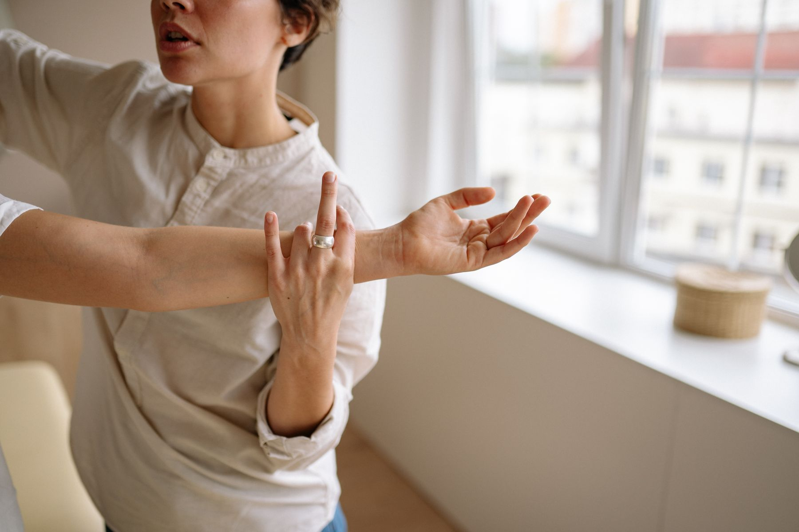

Un patient à la fois
Pas de salle où trois personnes pédalent pendant qu'une quatrième attend son tour. Le créneau réservé est un créneau entier.
La praticienne
Elle a ouvert son cabinet dans son village, à Junglinster, plutôt qu'en ville. Un choix assumé : travailler avec les gens d'ici, les suivre dans la durée, et pouvoir se déplacer chez ceux qui ne peuvent plus venir.
Sa façon de travailler
Beaucoup de patients arrivent au cabinet avec une ordonnance, un endroit qui fait mal, et une phrase toute prête : « on m'a dit que c'était l'âge ». Nora commence rarement par la table de soin. Elle commence par des questions.
Depuis quand ? Après quoi ? Qu'est-ce qui soulage, qu'est-ce qui aggrave ? Quel métier, quels gestes répétés, quelle position pendant huit heures par jour ? Une épaule qui coince à droite raconte souvent une histoire qui commence ailleurs. Le premier rendez-vous dure quarante-cinq minutes pour cette raison : on ne rattrape jamais un bilan bâclé.
Ensuite seulement vient le traitement : thérapie manuelle, mobilisations, exercices progressifs, et toujours quelque chose à faire chez soi entre deux séances. Parce que trente minutes par semaine au cabinet ne pèsent pas lourd face aux cent soixante-huit heures que dure la semaine.
Le jour où vous n'avez plus besoin de revenir, le travail est réussi. C'est la seule mesure qui compte.
Le parcours
Haute École de la province de Liège, en Belgique — la plupart des kinésithérapeutes luxembourgeois se forment en Belgique, en Allemagne ou en France, puis font reconnaître leur diplôme au Grand-Duché.
Service de rééducation en centre hospitalier, puis cabinet de groupe — hôpital, centre de rééducation, cabinet de groupe : c'est là que se construit la main et le regard clinique.
Drainage lymphatique manuel et rééducation après chirurgie du cancer, kinésithérapie du sport, rééducation respiratoire. Quatre compétences déclarées, entretenues par de la formation continue.
Une maison en pierre du pays, une salle de soin, un plateau d'exercices. Le cabinet reçoit sur rendez-vous, du lundi au vendredi.

Son expertise
Ces compétences sont celles déclarées auprès de l'Association luxembourgeoise des kinésithérapeutes, qui tient l'annuaire officiel de la profession.
Ce à quoi elle tient
Pas de salle où trois personnes pédalent pendant qu'une quatrième attend son tour. Le créneau réservé est un créneau entier.
Un patient qui comprend ce qui lui arrive fait ses exercices. Un patient qui ne comprend pas abandonne à la troisième séance.
Quand ce n'est pas de la kinésithérapie, elle le dit et elle renvoie vers le bon interlocuteur. Sans faire durer.
« On ne soigne pas une épaule. On soigne quelqu'un qui a mal à l'épaule. » Nora Weber
Faire connaissance
Le temps de raconter votre histoire, de faire l'examen, et de repartir avec un plan. Réservez directement dans l'agenda du cabinet.